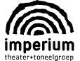

Liefdes Lied
Theater en Toneel Meerdere data: Vanaf vr 17 februari 2017 t/m za 4 maart 2017. Imperium Theater
Toneelgroep Imperium bestaat 60 jaar en neemt jubelend de eerste amateuropvoering van Liefdeslied (2015) voor haar rekening. Het is geen lied maar het gaat wel heel erg over liefde. Over liefde willen, krijgen, verliezen, voelen, geven en verraden. Over het verdriet, de woede, de blijdschap en de angst die liefde met zich meebrengt. En ook de alledaagsheid van liefde. Zo veel liefde, dat het wellicht toch een lied wordt.
"Jongetje! Jongetje! Jongetje! Jongetje! Jongetje! Jongetje! Mannetje toch." In Liefdeslied van Peer Wittenbols treffen vier mensen elkaar in een ziekenhuis in verbouwing. Raaf heeft een ernstig auto-ongeluk gehad en zijn lot is onzeker. "Voor eeuwig ben je samen... En ineens... ligt een van de twee in het water. Ik snap het niet meer. Ik ben zo bang." Voor de wachtenden resulteren angst en tijd in verdriet en troost. Maar het blijven mensen. Geen enkel inzicht komt gratis en elke uitkomst wordt bevochten. Gelukkig valt er voor het publiek ook genoeg te lachen. De gepaste afstand die de verschillende personages ten opzichte van elkaar in acht nemen, geeft meer lucht in een anders stoffige ruimte.
De taal in Liefdeslied is een gestileerde spreektaal, die zowel grappig als pijnlijk is, waardoor rake humor en rauwe emotie vlak naast elkaar komen te liggen. "Rouw is een schaduw. Soms denk je: het is weg. Blijkt het schuin achter je te liggen. Te wachten tot je je omdraait." De taal en de puntige dialogen vergen helder spel en contrasten in spelritme om de grappen goed getimed naar voren te brengen. De vier Imperianen die elkaar fysiek te lijf gaan, halen alles uit de kast om dit lied in alle toonaarden aan u voor te dragen.
Peer Wittenbols studeert in 1989 af aan de Toneelacademie Maastricht. Samen met studiegenoot Rob Ligthert richt hij theatergroep De Federatie op. Hier werken zij in een vaste combinatie: Wittenbols schrijft, Ligthert regisseert. Door deze werkwijze creëren de twee een omgeving waarin het nieuwe Nederlandse repertoire van Wittenbols een eigen plek kan krijgen. Wittenbols schrijft veel: sinds zijn eerste stuk "Het vege lijf" uit 1993 is zijn oeuvre gegroeid tot zo een 50 stukken.
Ric Berretty begon als regisseur bij Imperium in 2010 met Plaag. Daarna werd hij lid van Imperium en zette als acteur menig mooie rol neer. Zijn laatste grote regie bij Imperium was de succesvolle familievoorstelling Moord in de Kerststal (2013).
Prijs: € 12,- Regulier € 10,- Studenten en CJP Reserveer


- Social Media


- 